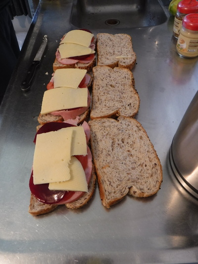
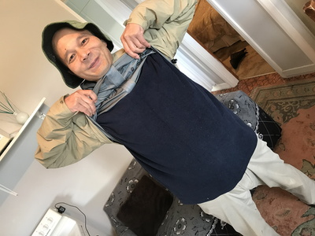
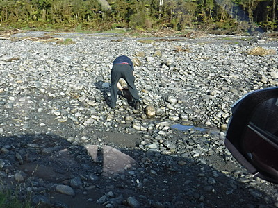
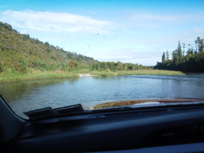
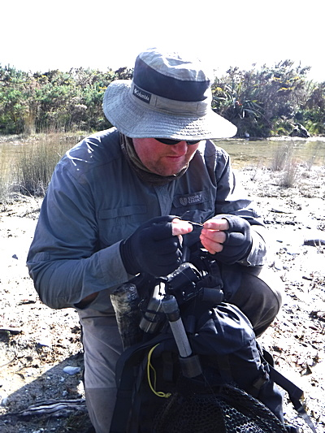

釣行日誌 ＮＺ編 「一期一会の旅：A Sentimental Journey」
ラグーンにて、汽水域の大物たち
11/22(THU)-1
今朝は6時半に起床。ディーンの話では、今日の目的地は人気河川なので、他の釣り人が来る前に朝駆けで突撃しなければならないとのこと。そりゃ急ごう！と、シリアルを器に入れ、レンジで温めたミルクを注いで美味しく頂く。バナナも１本。手早く朝食を済ませると、ディーンがお昼のサンドイッチ作りに取りかかった。マヨネーズとマスタードを薄くまんべんなくかけた味わい深い褐色の食パンの上に、分厚いハム、濃い紫色をしたビートルートのピクルス、チーズ、レタスを載せて挟んでラップで包んで出来上がり。なにせサイズが大きいので、ディーンが２つ、僕が１つとなった。その他、クラッカー、チーズの薄切り、新鮮なイチゴ、チョコレートなど１式を大型プラコンテナに詰める。

初夏とはいえ、サウス・ウェストランドの朝は冷える。今回も持参した、1998年（20年前！）の釣行時にグレースさんが手作りして縫ってくれたフリースのベストと、レインジャケットを着込んでちょうどいいくらいだ。

釣り具とランチボックスを積み込み、ロッジを出発してからしばらくSH6を走り、とある農道に入った。鉄製のゲートがあったのでディーンはトヨタを停め、僕に向かって
「Open sesami! （開け、ゴマ！）」
と言う。僕は彼のウィット溢れる１言にくくっと笑いつつ車を降り、懐かしい鍵型でリングの付いたロックを外し、ゲートを開け、車が通り抜けるのを待ち、ゲートを閉めてから追いかけて乗り込む。
10分ほど走ると、広くて荒れた枯れ河原に出た。進路上に大石があったので、ディーンが降りて怪力で転がす。

シフトを四駆に切り替えてそろそろと石だらけの河原に入って行くとドシンドスンと横揺れがするが、彼は手慣れた感じでハンドルをさばいている。ホキティカ空港で初めて乗った時に、うわ！車高の高い車だなと思ったのだが、ここへ来てその理由が判った。こうした悪路を走破するために、最低地上高がとても高く余裕があるのだ。遙か対岸に見える農道・林道？の入り口めがけてトヨタが獰猛な獣のように進んで行く。河原から農道への上がり口が急坂になっていて、これホントに登れるのかな？と不安だったが、ディーンは巧みなアクセルとハンドルさばきで難なく登りきり、平らな農道を再び走り出した。
だだっ広い牧草地の中をトヨタは延々と走り続ける。途中、何度も川に出くわし、浅い流れをザブザブと四駆は今度も難なく渡って進む。

昔テレビで見たモンゴルのイトウ釣りのような体験である。ディーンが、
「今日は何時頃まで釣りたい？」
と訊ねたので、このところの叔父とのルアー釣りでは午後半日のパターンが多かったし、全４日もあることなので、
「そうだね、まぁ４時くらいかな。」
と返事をした。もはや毎日薄暗くなるまでのハードな釣りは無理であろう。(笑)
8時40分頃に農道の終端に着き車を停め、２人で釣り支度を始める。かなり下流まで来たようだ。準備万端整えて、岸沿いを歩いて河口へと向かう。今日の狙いは汽水域の大物シーラン・ブラウンである。果たして、あの白銀色に輝くパワフルな魚体を抱くことは出来るのだろうか？
40分ほど川沿いに歩いてくると、いよいよ海に出て白い波頭が見えた。河口の北側の草地に切れ込んで細長く広がるラグーンの岸辺でタックルをセットする。リーダーは2X、ティペットはディーンが用意してくれたフロロカーボンの2Xを1.2mほどを継ぎ足してくれた。

フライはホワイトベイトのイミテーションであるグレイゴーストを結んだ。準備よし！天気は快晴！ あとは鱒を見つけるだけだ。しかし、ラグーンの透明度は良く、水深は深いところでも1.5mほどなのだが、偏光グラス越しでも全然水中の様子がわからない。ディーンの眼力だけが頼りである。
草むらを踏み分けつつ静かに歩みを進めていたディーンが振り返り、
「１尾居るぞ。」
と指さす。しかしそっちの方向を凝視しても何も見えない。
「お！あっちにも。あ、また別のが居る....」
「ええっ！そんなにたくさん居るの？！」
フライをフックキーパーから外し、キャストの準備をしてから、しずしずと彼の後ろに回って肩越しに見直すと、なるほど、鯉のようにでっぷり太った黒く巨大な影が静かに左方向へと進んで行く。楽に60cmは超えているだろう。前回2010年の釣行時にブリントさんが掛けた50cm級のシーランナーが見せた激しいファイトとジャンプを思いだし、2Xが必要なのも当然だと思われた。
「いいかい、鱒の進んで行く1.5mくらい先にフライを落とすんだ。」
指示に従いフォルスキャストを始めた途端、
「うわ！重い竿！」
と驚いた。8年ぶりに振るキルウェルの6番ロッドはとても重く感じられた。前回の釣行以来、スピニングの釣りに夢中になってフライフィッシングとは長い間ご無沙汰だったのである。おまけにデカイ獲物を目の当たりにしてココロはすっかり逆上してしまい、気ばかり焦って力任せにブンブンと振り回し、手首の開いたシャンとしないキャストになってしまう。手首が決まっていないので無駄な力を込める割にはラインとリーダーが伸びず、当然ながらターゲットまでフライは届かない。よろよろと着水したストリーマーの向こうをブラウンが遠くへ泳ぎ去る。
「うーん。よし次へ行こう。」
ディーンは最初の１尾に早々と見切りを付け、8mほど上流側へと静かに進んで行く。２尾目は正面からゆっくりとこちらに向かって泳いで来る。
「よし！鱒の手前に落とせっ！」
やはり下手くそなキャストではあったが、なんとか鱒の進んで来るルート上にフライが落ちた。
「沈むまで少し待って。よし、今だ。ボンッ、ボンッ、ボンッ！」
独特の擬音語でディーンがストリッピングの指示を出す。右手でラインをたぐり、スッスッスッと引いてあたかもホワイトベイトが泳いでいるようなアクションを付ける。後を付いてきた魚影がけだるげにスピードを上げ、ストリーマーに追いついた。
「モゾッ...」
ラインを通じて控えめなアタリが伝わってきたが、ストリッピングに夢中でロッドを立てて合わせることが出来なかったので乗らなかった。口中に何か異物の気配を感じ取った鱒はスーッと視界から消えた。もっと激しく喰い付いて来て、向こう合わせで掛かるかと思っていたが甘かった。
「ゴウ、もっと素早く大きくストリッピングするんだ。鱒にフライを観察させてあれこれ躊躇・判断させる時間を与えてはダメだぞ。」
とディーンがアドバイスしてくれた。再びラグーンの上流側へと回り込み、３尾目を狙う。フォルスキャストを２回したところで背後の草にストリーマーが引っかかってしまった。それほど背の高い茂みでは無いのだが、手首が開くのでバックキャストも力なく低く落ちてしまうのだ。
『うう...こりゃド素人以下だな......』
8年前の釣行から腕が落ちた、と言えば聞こえは良いが、元からそんな腕は無かったのだ。（泣）
『ああ、鰐部さんと一緒だったらあの流麗なキャストを見せてくれて、良いお手本になるのだがなぁ。...』
などと考えても始まらない。
釣行日誌ＮＺ編 目次へ
サイトマップ
ホームへ
お問い合わせ